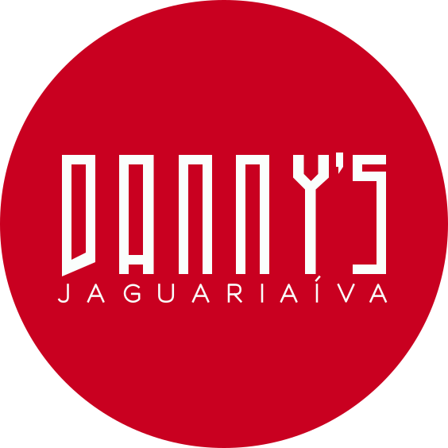

01
2015 · A primeira ideiaAli Baba abre as portas.
Daniele monta o restaurante Ali Baba, especializado em shawarma. É ali que começa a experiência que depois se transforma em algo maior.
Jaguariaíva
Crocância que começou com um sonho em família — e hoje reúne Jaguariaíva e Ponta Grossa em volta da mesma mesa.
Antes do frango crocante, veio um restaurante, uma ideia que ganhou a rua e uma família disposta a começar de novo. Essa é a jornada que deu origem à Danny’s.
Daniele monta o restaurante Ali Baba, especializado em shawarma. É ali que começa a experiência que depois se transforma em algo maior.
JaguariaívaNo primeiro Festival Gastronômico de Jaguariaíva, a equipe aceita o convite e vende mais de 700 cones de 200 g em apenas três dias.
700 cones · 3 diasDaniele, conhecida como Dani, se une ao irmão Danilo. Juntos, deixam suas carreiras para mergulhar no novo empreendimento e levam o shawarma a eventos e festas.
Feito em famíliaEm junho de 2020, com a expansão no horizonte, a decisão foi abrir uma segunda unidade em Ponta Grossa e levar a marca ainda mais longe.
Ponta GrossaResumo ilustrativo baseado no destaque “Sobre” indicado como referência. Datas, números e narrativa ainda dependem da validação da empresa. Consultar referência ↗
A jornada começou em Jaguariaíva e chegou a Ponta Grossa. Escolha a unidade mais próxima e faça seu pedido pelo cardápio online.
Onde tudo começou. O Ali Baba, o primeiro festival e os primeiros cones fazem parte das raízes da Danny’s.
Jaguariaíva/PR · Endereço a confirmar com a empresa
Ver no mapa ↗Uma nova etapa da expansão da Danny’s, mantendo o sabor crocante que nasceu em Jaguariaíva.
Ponta Grossa/PR · Endereço a confirmar com a empresa
Ver no mapa ↗Confira horário, disponibilidade de entrega e unidade atendida diretamente no cardápio online.
O sabor tem uma história.
Proposta independente · Demonstração